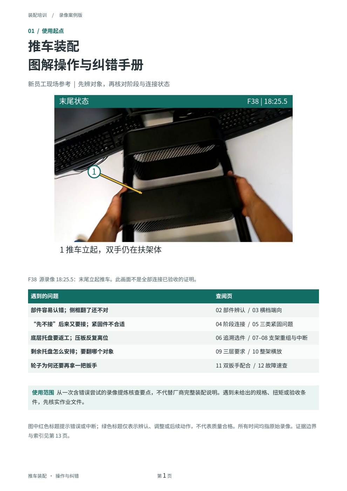

把装配录像整理成培训手册。
先回答十题核查单，再根据结论制作带标注截图的操作与纠错手册，供新员工辨认部件、查阅阶段要求和排查典型问题。
观看带英文指导的第一人称装配录像，回答十个跨时刻核查问题，再把结论整理成可查阅、可编辑的操作与纠错手册。
先回答十题核查单，再根据结论制作带标注截图的操作与纠错手册，供新员工辨认部件、查阅阶段要求和排查典型问题。
不提供参考答案、语音转录、事件时间锚点或手册初稿。输入录像单独下载。
结合画面与语音回答十题，分别定位相似事件，给出源时间与对应证据；再按操作与纠错主题组织手册，自行选图、标注对象与状态。
录像包含错误尝试、指导者的提醒和后续纠正。需区分错误操作、指导要求和实际执行情况，不能把所有实际动作都当作正确示范。
answers.md：十题结论与音画证据。manual.docx：正文可编辑、配图嵌入的手册。manual.pdf：内容一致、正常显示的PDF。不限定手册页数或截图数量；标注可用文档原生形状、SVG等形式。
录像中的英文指导声与第一人称画面共同构成输入。
按题定位，只改变播放位置。
完整时长预览 · 704px / 12fps · 原AAC音轨直接复制
输入不包含参考答案、语音转录、事件时间锚点或手册初稿。
公开素材为变调语音版本；受测模型使用本地Whisper转写工具辅助理解。
| 维度 | 分值 | 核查内容 |
|---|---|---|
| 十题结论与关系 | 50 | 对象、指代、阶段、动作及纠正关系 |
| 证据时间与配对 | 20 | 源时间定位、动作语音对应、证据具体性 |
| 手册综合交付 | 20 | 事实6 / 图文8 / 可用性2 / 可编辑与导出4 |
| 美观与教学引导 | 10 | 层级、布局、字体配色、教学顺序、视觉引导 |
两组手册20分与美观引导10分统一由GPT-6.1-Sol按v3标准验收。问答及时间证据由GPT-6.1-Sol主评。Gemini核听源音频；事实计分以原标注为准。
脚本检查文件与返回字段、换算源时间并汇总固定权重。模型给出逐项判断，不自行调整分值。
本页展示Sol xhigh与Luna xhigh两组独立运行的实际交付；上方选择决定当前展示的手册和评分，评分依据为原数据集标注及模型评审，未进行人工盲评。十题共享部分事件，其中部分题目以视觉为主；不将其视为十个独立的双模态样本。
分数按原数据集标注核对。
问答、证据和手册分别计分。
| 受测系统 | 问答 /50 | 证据 /20 | 手册 /20 | 设计 /10 | 总分 /100 | 实际交付 |
|---|---|---|---|---|---|---|
| GPT-6.1-SolCodex · xhigh | 40.00 | 13.67 | 16.28 | 6.00 | 75.94 | |
| GPT-6-LunaCodex · xhigh | 27.50 | 9.33 | 10.73 | 6.00 | 53.56 |
相同录像、题目、工具与评分权重。两组均显式设置xhigh，逐请求核验；无总答题时间与工具次数上限。
正在加载结果…
无总时长或工具次数上限；计入模型与工具累计运行时间，含导出，不含评分时间。
选择上方模型，查看对应的实际交付和逐项评分。
| 手册20分的组成 | 得分 | 满分 |
|---|
实际工具包括Shell、抽帧与看图、本地Whisper、文档生成及LibreOffice导出。求解模型没有原生音频输入；评委在交付封存后介入。
这里展示Sol xhigh实际提交的13页PDF，正文、截图和标注保留原样。

展开题目可见实际答案、标注依据、分项判断，
并跳到源录像与对应手册页。
当前核查：GPT-6.1-Sol · 切换结果模型 ↑
正在加载逐题材料…
十题合计84分；文档全局组织、可编辑交付和设计质量另计16分。各项按原始精度求和，显示值可能存在末位舍入差。
委托、十题核查单、空白模板和来源许可。输入录像单独下载。
完整可编辑交付 ↗GPT-6.1-Sol · xhigh：Word、PDF、答案与84份图像／标注文件，其中42份SVG源。
逐项评分与展示数据 ↗实际答案、标注依据、评审理由、评分分项与媒体SHA256。
素材：HoloAssist · z057-june-28-22-rashult_assemble · 公开变调音视频版本。数据许可为CDLA-Permissive-2.0。案例改编与评分不表示经过原数据集作者审核。